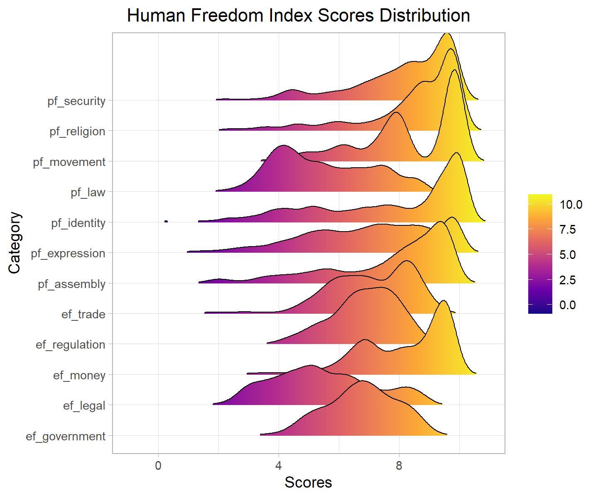
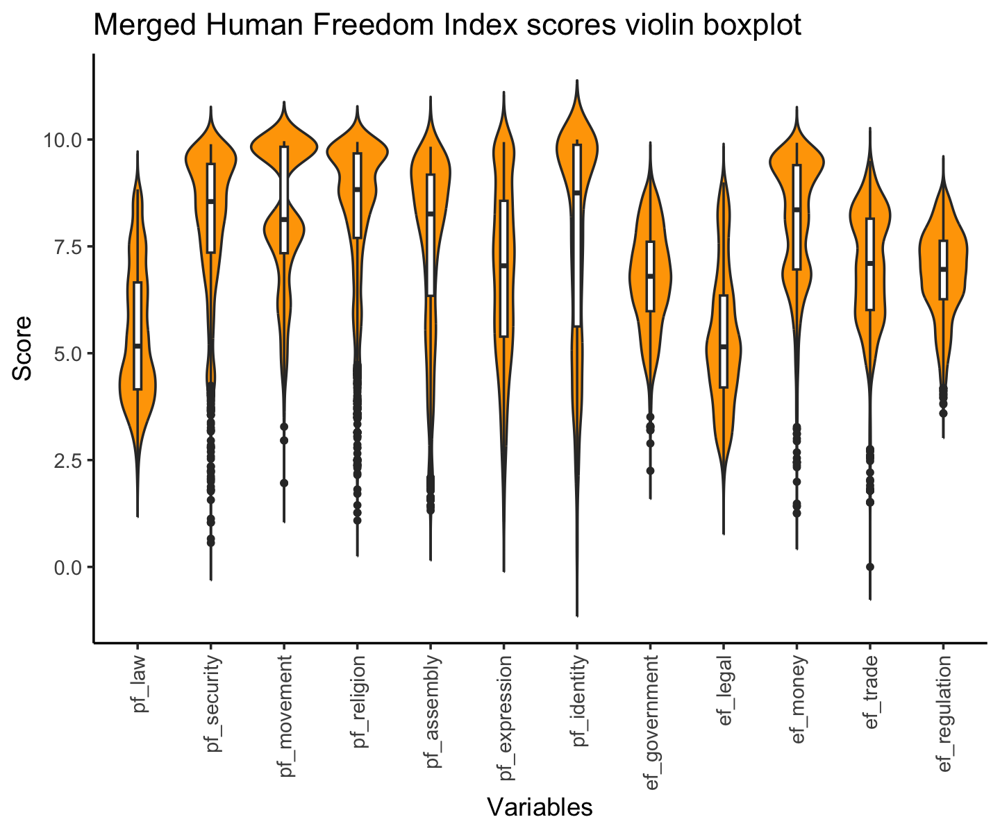
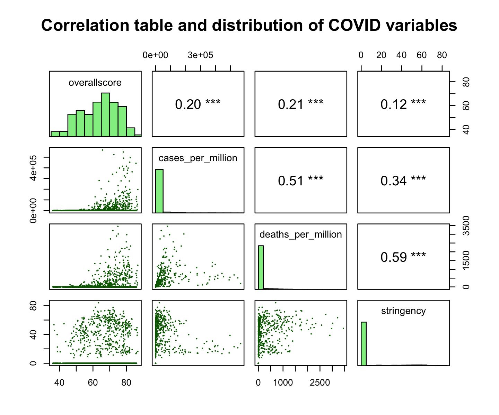

We display the distribution of the different SDG achievement scores, using boxplots to have an overview of the median, the range with most of the observations and the outliers.
data <-read.csv(here("scripts", "data", "all_Merge.csv"))par(mfrow =c(2, 3), oma =c(0, 0, 2, 0))for (i in8:13) { boxplot(data[, i], main =names(data)[i], horizontal =TRUE, ylim =c(0, 100))if (i==9){mtext("Distributions of the SDG scores (overall & 1-5) going from 0-100%", side=3, line=4) }}

for (i in14:19) { boxplot(data[, i], main =names(data)[i], horizontal =TRUE, ylim =c(0, 100))if (i==15){mtext("Distributions of the SDG scores (6-11) going from 0-100%", side=3, line=4) }}
for (i in20:24) { boxplot(data[, i], main =names(data)[i], horizontal =TRUE, ylim =c(0, 100))if (i==21){mtext("Distributions of the SDG scores (12-17) going from 0-100%", side=3, line=4) }}par(mfrow=c(1,1))

We see different schemes among the different goals. Indeed some are quite homogeneous with a small spread of values (e.g. overall score, goals 2 and 8) while others have a large spread of values (e.g. goals 1 and 10). Goals 1, 3, 4, 7, 9, 10 and 13 have values across all possible percentages. Goals 2, 5, 8, 13 and 17 have extreme values situated outside the 95% confidence interval. It is interesting to see that goal 8 (decent work and economic growth) is the one with smaller spread of values, whereas goal 1 (no poverty) have the higher distance between the first and the third quartile. Goal 2 (no hunger) has a tight spread of values, but with the greater amount of outliers in the smaller values, meaning hunger is similar across most countries, but when it differs it is in very bad manner.
We know look at the variables in a summary table to have a more precise view of the numbers.
X
code
year
country
continent
region
overallscore
goal1
goal2
goal3
goal4
goal5
goal6
goal7
goal8
goal9
goal10
goal11
goal12
goal13
goal15
goal16
goal17
Min. : 1
Length:3565
Min. :2000
Length:3565
Length:3565
Length:3565
Min. :37.4
Min. : 0.0
Min. :16.50
Min. : 5.9
Min. : 0.00
Min. : 3.50
Min. :23.30
Min. : 0.10
Min. :40.00
Min. : 0.30
Min. : 0.00
Min. :20.30
Min. :32.90
Min. : 0.0
Min. :26.00
Min. :27.90
Min. :15.10
1st Qu.: 892
Class :character
1st Qu.:2005
Class :character
Class :character
Class :character
1st Qu.:55.0
1st Qu.: 44.5
1st Qu.:52.60
1st Qu.:44.3
1st Qu.: 55.60
1st Qu.:43.20
1st Qu.:53.00
1st Qu.:41.50
1st Qu.:64.00
1st Qu.:15.50
1st Qu.: 35.20
1st Qu.:55.80
1st Qu.:67.90
1st Qu.:72.9
1st Qu.:55.00
1st Qu.:51.50
1st Qu.:46.10
Median :1783
Mode :character
Median :2011
Mode :character
Mode :character
Mode :character
Median :65.5
Median : 87.4
Median :58.90
Median :70.9
Median : 80.60
Median :58.00
Median :65.30
Median :65.50
Median :70.20
Median :29.40
Median : 62.20
Median :75.30
Median :84.60
Median :90.8
Median :65.10
Median :61.40
Median :55.40
Mean :1783
NA
Mean :2011
NA
NA
NA
Mean :64.0
Mean : 71.7
Mean :58.03
Mean :64.1
Mean : 71.97
Mean :55.98
Mean :64.97
Mean :57.86
Mean :70.04
Mean :37.51
Mean : 58.29
Mean :70.32
Mean :79.33
Mean :82.1
Mean :64.96
Mean :62.63
Mean :55.69
3rd Qu.:2674
NA
3rd Qu.:2017
NA
NA
NA
3rd Qu.:72.4
3rd Qu.: 98.8
3rd Qu.:65.30
3rd Qu.:81.4
3rd Qu.: 94.50
3rd Qu.:68.90
3rd Qu.:75.20
3rd Qu.:72.60
3rd Qu.:76.60
3rd Qu.:53.90
3rd Qu.: 81.60
3rd Qu.:85.10
3rd Qu.:94.10
3rd Qu.:97.2
3rd Qu.:74.30
3rd Qu.:74.60
3rd Qu.:65.10
Max. :3565
NA
Max. :2022
NA
NA
NA
Max. :86.8
Max. :100.0
Max. :83.40
Max. :97.3
Max. :100.00
Max. :94.00
Max. :95.10
Max. :99.60
Max. :88.70
Max. :99.20
Max. :100.00
Max. :99.10
Max. :99.00
Max. :99.9
Max. :97.90
Max. :96.00
Max. :96.80
NA
NA
NA
NA
NA
NA
NA
NA's :276
NA
NA
NA
NA
NA
NA
NA
NA
NA's :276
NA
NA
NA
NA
NA
NA
To have an overview of the relationship between our independent variables and the SDG overall score, we make several graphs containing the Pearson correlation coefficient between the variable, the scatter plots describing the relationship between the variables, as well as the distribution of each variable.
data_question1 <-read.csv(here("scripts", "data", "data_question1.csv"))data_question2 <-read.csv(here("scripts", "data", "data_question24.csv"))data_question3_2 <-read.csv(here("scripts", "data", "data_question3_2.csv"))data_question3_3 <-read.csv(here("scripts", "data", "data_question3_3.csv"))panel.hist <-function(x, ...){ usr <-par("usr"); on.exit(par(usr)) par(usr =c(usr[1:2], 0, 1.5) ) h <-hist(x, plot =FALSE) breaks <- h$breaks; nB <-length(breaks) y <- h$counts; y <- y/max(y) rect(breaks[-nB], 0, breaks[-1], y, col ="lightgreen", ...)}panel.cor <-function(x, y, digits =2, prefix ="", cex.cor, ...){ usr <-par("usr"); on.exit(par(usr)) par(usr =c(0, 1, 0, 1)) r <- (cor(x, y)) txt <-format(c(r, 0.123456789), digits = digits)[1] txt <-paste0(prefix, txt) if(missing(cex.cor)) cex.cor <-0.8/strwidth(txt) text(0.5, 0.5, txt, cex = cex.cor * r)}# Independent variables pairs(data_question1[,c("overallscore", "unemployment.rate", "GDPpercapita", "MilitaryExpenditurePercentGDP", "internet_usage")], upper.panel=panel.cor, diag.panel=panel.hist, main="Correlation table and distribution of various variables")
The overall SDG achievement score is highly correlated with the percentage of people using the internet (r=.79) and GDP per capita (r=.60). The unemployement rate as well as the military expenditures in percentage of GDP per capita do not seem to play a role. However, this is only for the overall score.
pairs(data_question1[,c("overallscore", "pf_law", "pf_security", "pf_movement", "pf_religion", "pf_assembly", "pf_expression", "pf_identity")], upper.panel=panel.cor, diag.panel=panel.hist, main="Correlation table and distribution of personal freedom variables")
The overall SDG achievement score is highly correlated with “personal freedom: law” (p=.69) and “personal freedom: identity” (p=.62). The other dimensions of personal freedom do not seem to have important influence. Regarding the distribution of the personal freedom variables, we notice that except for law, all have right-skewed distributions meaning that most of the countries have high scores.
pairs(data_question1[,c("overallscore", "ef_government", "ef_legal", "ef_money", "ef_trade", "ef_regulation")], upper.panel=panel.cor, diag.panel=panel.hist, main="Correlation table and distribution of economic freedom variables")
The overall SDG achievement score is highly correlated with “economical freedom: legal” (p=.77), “economical trade: legal” (p=.67) and “economical freedom: money” (p=.6), while the other dimensions of economic freedom do not seem to have important influence. Regarding the distribution of the economic freedom variables, we notice more heterogeneous distributions and scores across the various countries than for personal freedom.
pairs(data_question3_2[,c("overallscore", "cases_per_million", "deaths_per_million", "stringency")], upper.panel=panel.cor, diag.panel=panel.hist, main="Correlation table and distribution of COVID variables")
The different variables used to materialize the impact of COVID19 do not seem to have important influence on the overall score, but we will further explore for the different SDGs, since we believe that COVID19 had a specific influence on some SDGs, for instance “good health and well-being” or “decent work and economic growth”.
pairs(data_question3_3[,c("overallscore", "ongoing", "sum_deaths", "pop_affected", "area_affected", "maxintensity")], upper.panel=panel.cor, diag.panel=panel.hist, main="Correlation table and distribution of conflicts variables")
The different variables used to materialize the impact of conflicts do not seem to have important influence on the overall score, but we will further explore for the different SDGs, since we believe that conflicts have a specific influence on some SDGs.
Focus on the evolution of SDG scores over time
First, we look at the evolution of SDG achievement overall score over time for the whole world, by continent and by region.
data1 <- data_question2 %>%group_by(year) %>%mutate(mean_overall_score_by_year=mean(overallscore))ggplot(data1) +geom_line(mapping=aes(x=year, y=mean_overall_score_by_year), color="blue", lwd=1) +scale_y_continuous(limits =c(0, 100)) +labs(title ="Evolution of the mean overall SDG achievement score across the world",y ="Mean Overall SDG Score",x ="Year" )
The general évolution of SDG scores arround the world is increasing over the years.
data2 <- data_question2 %>%group_by(year, continent) %>%mutate(mean_overall_score_by_year=mean(overallscore))ggplot(data2) +geom_line(mapping=aes(x=year, y=mean_overall_score_by_year, color=continent), lwd=1) +scale_y_continuous(limits =c(0, 100)) +labs(title ="Evolution of the mean overall SDG achievement score by continent",y ="Mean Overall SDG Score",x ="Year" )
Looking at the continents, we see that Europe is above the others, while Africa is below, but in general, all have increasing overall scores.
data3 <- data_question2 %>%group_by(year, region) %>%mutate(mean_overall_score_by_year=mean(overallscore))ggplot(data3) +geom_line(mapping=aes(x=year, y=mean_overall_score_by_year, color=region), lwd=1) +scale_y_continuous(limits =c(0, 100)) +labs(title ="Evolution of the mean overall SDG achievement score by region",y ="Mean Overall SDG Score",x ="Year" )

This view that groups the countries by region gives us precision about the previous inforamtion. Indeed, it is Western Europe that is particularly above and Sub-Saharan Africa that is clearly below.
Second, we look at the evolution of SDG achievement scores(16) over time for the whole world, by continent and by region.
data4 <- data_question2 %>%group_by(year) %>%summarise(across(starts_with("goal"), mean, na.rm=TRUE)) %>%pivot_longer(cols =starts_with("goal"), names_to ="goal", values_to ="mean_value")color_palette <-c("red", "blue", "green", "orange", "purple", "pink", "brown", "gray", "cyan", "magenta", "yellow", "darkgreen", "darkblue", "darkred", "darkorange", "darkcyan")ggplot(data = data4) +geom_line(mapping =aes(x = year, y = mean_value, color = goal), size =0.7) +scale_color_manual(values = color_palette) +scale_y_continuous(limits =c(0, 100)) +labs(title ="Evolution of the mean SDG achievement scores across the world",y ="Mean SDG Scores",x ="Year" ) +guides(color =guide_legend(ncol =2, # Number of columnstitle.position ="top", # Position of the legend titletitle.hjust =0.5# Horizontal justification of the legend title ) )
Here, by looking at the SDGs individually, we notice that all SDGs except from goal 9 (industry innovation and infrastructure) are close to one another in terms of level and growth. Goal 9 starts far below the others in 2000 and growths faster until almost exceeding 50%.
ggplot(data = data4) +geom_line(mapping =aes(x = year, y = mean_value), size =0.7) +scale_color_manual(values = color_palette) +scale_y_continuous(limits =c(0, 100)) +labs(title ="Evolution of the mean SDG achievement scores across the world",y ="Mean SDG Scores",x ="Year" ) +facet_wrap(~ goal, nrow =4)
In contrast to the aspect discussed in the precedent graph, this graph shows us the same information in a different way and it pops out that some goals did not increase their scores much in the last two decades, for example goal 13 (climate action) and goal 12 (responsible consumption and production).
Now, comparing the SDG scores by continent, we observe that most of the time, Europe is at the top of the graph and Africa at the bottom, exept for goals 12 and 13 that are linked to ecology. Some other information stand out:
Americas are far behind the other parts of the world regarding goal 10: reduced inequalities.
Africa is far behind the other continents (even if becoming better) for goals 1, 3, 4 and 7.
Goal 9 (industry, innovation and infrastructure) show exponential growth for almost all continents.
Third we create an interactive map of the world to be able to navidagte from year 2000 to 2022, seeing the level of achievement of the SDGs (overall score) for each country. To open it in your browser, use this html file: . Here is only a non-interactive world map of the overall SDGs achievement scores, not taking into account the evolution over the years.
# Load world map dataworld <-ne_countries(scale ="medium", returnclass ="sf")# Merge data with the world map datadata0 <-merge(world, data_question2, by.x ="iso_a3", by.y ="code", all.x =TRUE)data0 %>%st_transform(crs ="+proj=robin") %>%ggplot() +geom_sf(color ="lightgrey") +geom_sf(aes(fill = overallscore), color =NA) +scale_fill_gradientn(colors =c("darkred", "orange", "yellow", "darkgreen"),values = scales::rescale(c(0, 0.25, 0.5, 1)),name ="Overall Score",na.value =NA ) +labs(title ="Mean overall SDG achievement score by country")+coord_sf(datum =NA) +theme_minimal()
Focus on relationship between SDGs
How are the different SDGs linked? (We want to see if some SDGs are linked in the fact that a high score on one implies a high score on the other, and thus if we can make groups of SDGs that are comparable in that way).
Let’s explore how the different SDG are correlated together by creating a heatmap of the correlation between our variables. We also added a small script to check whether the correlations are significantly different from 0. First, let’s select the SDGs scores.
We then reshape our data to be able to use the package ggplot2 to create our heatmap.
melted_cor_matrix <-melt(cor_matrix)melted_p_matrix <-melt(matrix(as.vector(p_matrix), nrow =ncol(sdg_scores)))plot_data <-# Combine the datasetscbind(melted_cor_matrix, p_value = melted_p_matrix$value)ggplot(plot_data, aes(Var1, Var2, fill = value)) +geom_tile() +geom_text(aes(label =sprintf("%.2f", value), color = p_value <0.05),vjust =1) +scale_fill_gradient2(low ="blue", high ="red", mid ="white", midpoint =0, limit =c(-1,1), space ="Lab", name="Pearson\nCorrelation") +scale_color_manual(values =c("black", "yellow")) +# black when significant, yellow if nottheme_minimal() +theme(axis.text.x =element_text(angle =45, hjust =1),axis.text.y =element_text(angle =45, hjust =1),legend.position ="none") +labs(x ='SDG Goals', y ='SDG Goals',title ='Correlation Matrix with Significance Indicator')
Note that as said previously, we assessed the correlations to ascertain if they substantially deviated from zero, setting the significance level at an alpha of 5%. To aid in visualization, we marked any correlations that did not meet this level of significance with a yellow highlight in our graphical representation. The absence of yellow markings on our plot suggests that all Sustainable Development Goal (SDG) scores demonstrate a statistically significant correlation.
We can have a look at the shape of the corelation between the SDGs with the plot function.